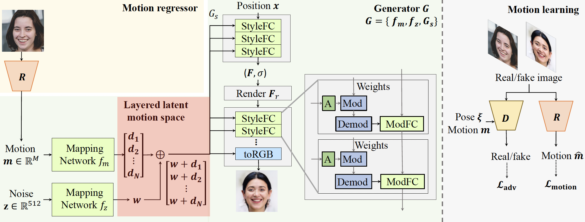
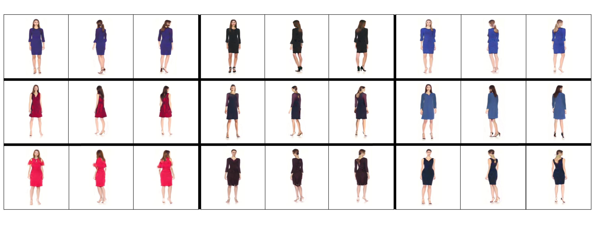

1University of Illinois, Urbana-Champaign
2ZMO AI Inc.
3Stanford University
4Google Inc.
Recent work on 3D-aware image synthesis has achieved compelling results using advances in neural rendering. However, 3D-aware synthesis of face dynamics hasn't received much attention. Here, we study how to explicitly control generative model synthesis of face dynamics exhibiting non-rigid motion (e.g., facial expression change), while simultaneously ensuring 3D-awareness. For this we propose a Controllable Radiance Field (CoRF): 1) Motion control is achieved by embedding motion features within the layered latent motion space of a style-based generator; 2) To ensure consistency of background, motion features and subject-specific attributes such as lighting, texture, shapes, albedo, and identity, a face parsing net, a head regressor and an identity encoder are incorporated. On head image/video data we show that CoRFs are 3D-aware while enabling editing of identity, viewing directions, and motion.
Controllable free-view dynamic head synthesis. Each row presents an identity sampled from a prior distribution and two expressions guided by a reference image (bottom left), viewed from multiple directions (column 1-3 and 4-6).

The following videos present the multi-view video generation of 3D content generated by CoRF.
Human body motion control with novel motion representation. We generate 9 identities rendered in 3 views (columns 1-3; 4-6; 7-9) at a 256X256 resolution conditioning on 3 different motion representations (row 1-3) that are randomly sampled weights of the PCA bases as motion representation.

@inproceedings{zhuang2022controllable,
title = {Controllable Radiance Fields for Dynamic Face Synthesis},
author = {Zhuang, Peiye and
Ma, Liqian and
Koyejo, Oluwasanmi and
Schwing, Alexander},
booktitle = {Proc. 3DV},
year = {2022},
}
Some of the work was completed while P.Z. was at Google. This work is supported in part by NSF under Grants 1718221, 2008387, 2045586, 2106825, 1934986, MRI #1725729, and NIFA award 2020-67021-32799. S.K. was supported by Google.